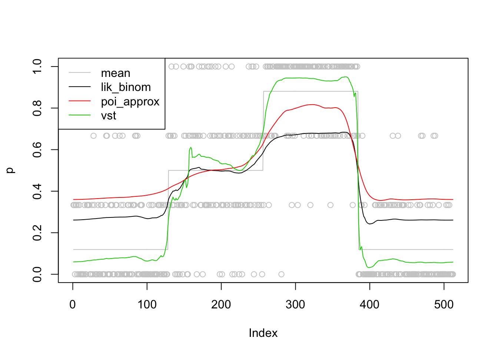
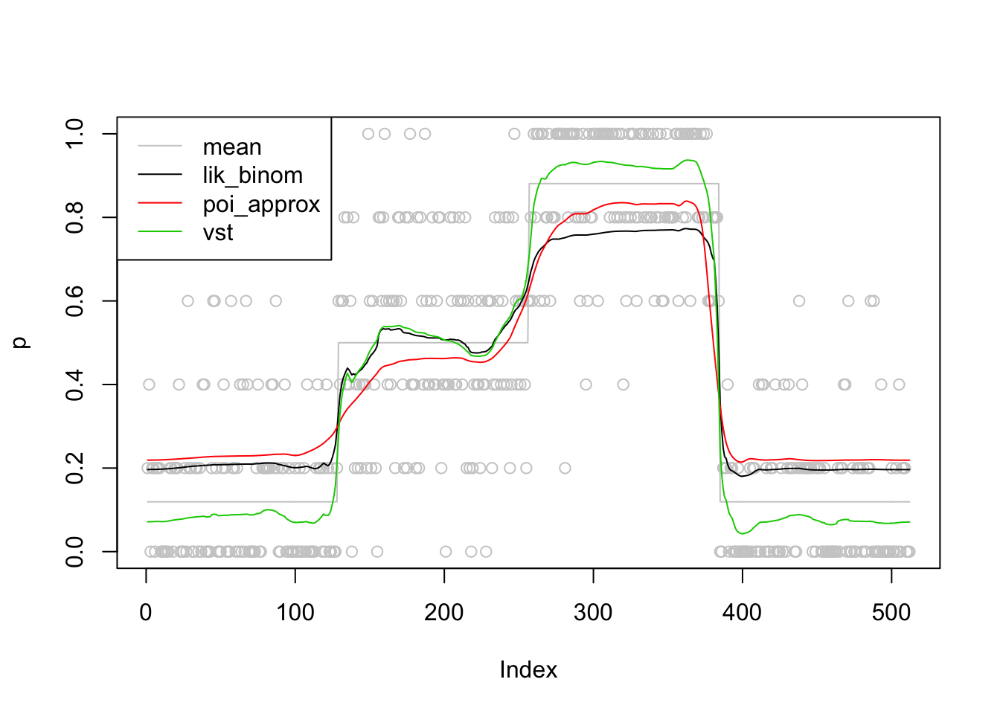
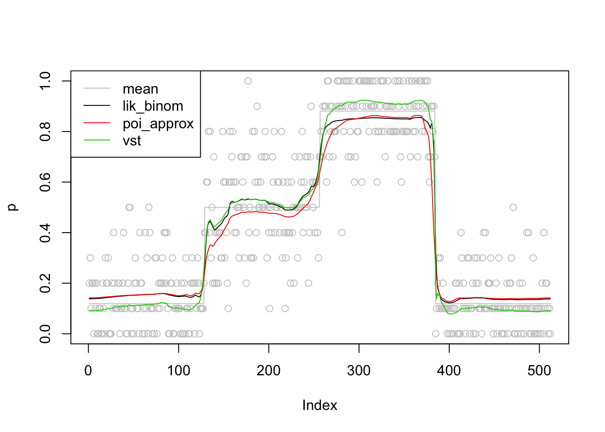
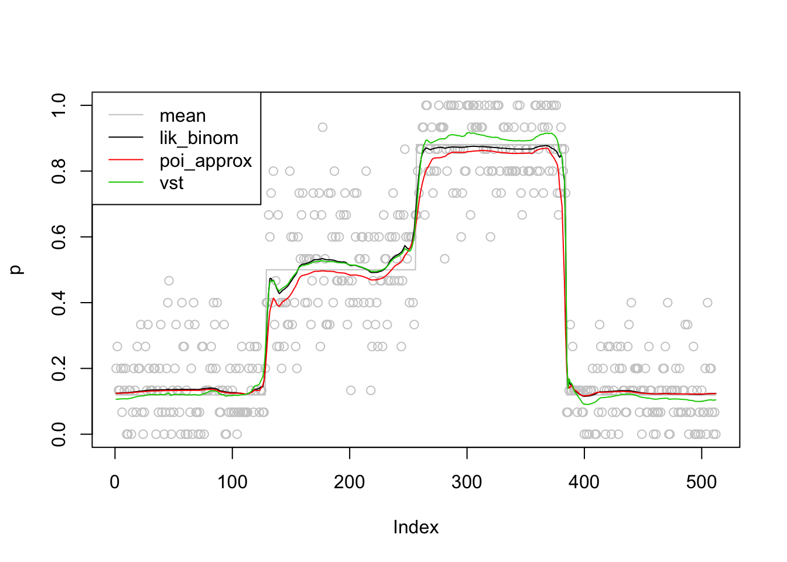
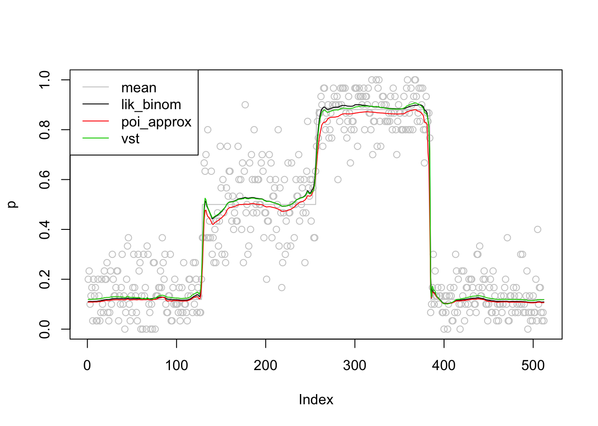
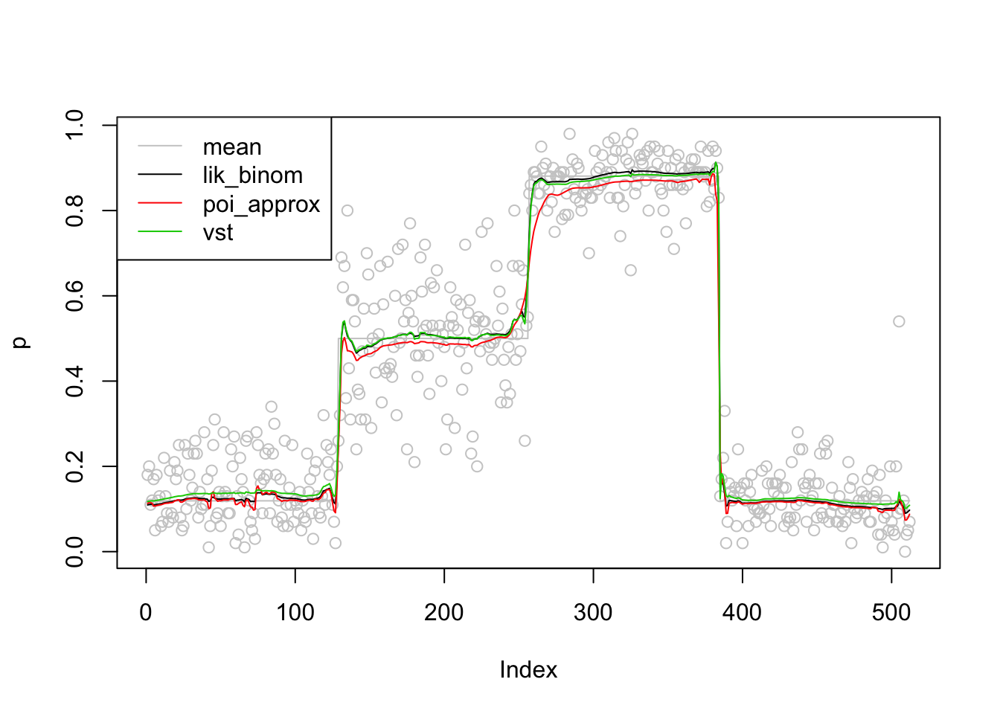

Last updated: 2019-01-06
workflowr checks: (Click a bullet for more information) ✔ R Markdown file: up-to-date
Great! Since the R Markdown file has been committed to the Git repository, you know the exact version of the code that produced these results.
✔ Environment: empty
Great job! The global environment was empty. Objects defined in the global environment can affect the analysis in your R Markdown file in unknown ways. For reproduciblity it’s best to always run the code in an empty environment.
✔ Seed:
set.seed(20180501)
The command set.seed(20180501) was run prior to running the code in the R Markdown file. Setting a seed ensures that any results that rely on randomness, e.g. subsampling or permutations, are reproducible.
✔ Session information: recorded
Great job! Recording the operating system, R version, and package versions is critical for reproducibility.
✔ Repository version: 9b7cd1f
wflow_publish or wflow_git_commit). workflowr only checks the R Markdown file, but you know if there are other scripts or data files that it depends on. Below is the status of the Git repository when the results were generated:
Ignored files:
Ignored: .DS_Store
Ignored: .Rhistory
Ignored: .Rproj.user/
Ignored: data/.DS_Store
Untracked files:
Untracked: analysis/chipexoeg.Rmd
Untracked: analysis/efsd.Rmd
Untracked: analysis/talk1011.Rmd
Untracked: data/chipexo_examples/
Untracked: data/chipseq_examples/
Untracked: talk.Rmd
Untracked: talk.pdf
Unstaged changes:
Modified: analysis/binomial.Rmd
Modified: analysis/fda.Rmd
Modified: analysis/sigma.Rmd
| File | Version | Author | Date | Message |
|---|---|---|---|---|
| Rmd | 9b7cd1f | Dongyue Xie | 2019-01-06 | wflow_publish(c(“analysis/index.Rmd”, “analysis/binomial2.Rmd”)) |
Three methods to smooth binomial sequence: 1. likelihood expansion 2. vst 3. Poisson approx
# a function to estimate nugget effect: sigma^2
normaleqn=function(nug,y,mu,st){
return(sum((y-mu)^2/(nug+st^2)^2)-sum(1/(nug+st^2)))
}
#a func output either nugget (sigma) or est mean
NuggetEst=function(y,st,mean.out=F){
#initialize nugget effect sigma^2
n=length(y)
x.m=c(y[n],y,y[1])
st.m=c(st[n],st,st[1])
nug.init=mean(((x.m[2:n]-x.m[3:(n+1)])^2+(x.m[2:n]-x.m[1:(n-1)])^2-2*st.m[2:n]^2-st.m[1:(n-1)]^2-st.m[3:(n+1)]^2)/4)
nug.init=max(c(0,nug.init))
#given st and nug to estimate mean
mean.est=smashr::smash.gaus(y,sigma=sqrt(st^2+nug.init))
#given mean estimate nugget effect
nug.est=uniroot(normaleqn,c(-1e6,1e6),y=y,mu=mean.est,st=st)$root
#if wanna mean estimation output, then estiamte mean again
if(mean.out){return(smash.gaus(y,sigma=sqrt(st^2+nug.est)))}else{return(sqrt(nug.est))}
}define \(\hat p_t=x_t/n_t\) if \(x_t\neq 0\) and \(x_t\neq n_t\); otherwise, \(\hat p_t\)=ash posterior mean using binomial likelihood(identity link)
pseudo-data: \(y_t=logit(\hat p_t)\); pseudo-data known variance \(s_t^2=\frac{1}{n_t\hat p_t(1-\hat p_t)}\); pseudo-data nugget effect: \(\sigma\), known/unknown.
library(ashr)
library(smashr)
logit=function(x){log(x/(1-x))}
sigmoid=function(x){exp(x)/(1+exp(x))}
binomial.smoothing.lik=function(x,nt,nugget,fil.num=1,family='DaubExPhase'){
n=length(x)
p.ash=ash(rep(0,n),1,lik=lik_binom(x,nt))$result$PosteriorMean
p.hat=x/nt
#subsititute 0/full obs by ash posterior mean
p.hat[x==0]=p.ash[x==0]
p.hat[x==nt]=p.ash[x==nt]
y=logit(p.hat)
#known sd
st=sqrt(1/(nt*p.hat*(1-p.hat)))
if(missing(nugget)){
mu=NuggetEst(y,st,T)
}else{
mu=smash.gaus(y,sigma=sqrt(st^2+nugget^2),filter.number = fil.num,family = family)
}
return(sigmoid(mu))
}pseudo-data: \(\log(x_t)-\log(n_t)\). If \(x_t=0\), \(x_t\)=ash posterior mean. pseudo-data known var: \(s_t^2=1/x_t\)
binomial.smoothing.poi=function(x,nt,nugget,fil.num=1,family='DaubExPhase'){
n=length(x)
x.ash=ash(rep(0,n),1,lik=lik_pois(x))$result$PosteriorMean
x[x==0]=x.ash[x==0]
p.hat=x/nt
y=log(p.hat)
#known sd
st=sqrt(1/x)
if(missing(nugget)){
mu=NuggetEst(y,st,T)
}else{
mu=smash.gaus(y,sigma=sqrt(st^2+nugget^2),filter.number = fil.num,family = family)
}
return(exp(mu))
}
# n=512
# p=sigmoid(c(rep(-2,128), rep(0, 128), rep(2, 128), rep(-2, 128)))
# set.seed(1234)
# nt=rpois(512,30)
# nugget=0.5
# ng=rnorm(n,0,nugget)
# q=sigmoid(logit(p)+ng)
# x=rbinom(n,nt,q)
# plot(x/nt,col='grey80')
# lines(p,col='grey80')
# lines(binomial.smoothing.poi(x,nt,nugget))VST on binomial data:
\(x\sim Binomial(n,p)\), let \(y=2\sqrt{n}\arcsin(\sqrt{\frac{x}{n}})\) then \(var(y)\approx1\).
pseudo-data: \(y_t=2\sqrt{n_t}\arcsin(\sqrt{\frac{x_t}{n_t}})\), pseudo data known variance: 1, pseudo data nugget: \(\sigma^2\), known/unkown.
binomial.smoothing.vst=function(x,nt,nugget,fil.num=1,family='DaubExPhase'){
n=length(x)
y=asin(sqrt((x)/(nt)))
#known sd
st=sqrt(1/(4*(nt)))
if(missing(nugget)){
mu=NuggetEst(y,st,T)
}else{
mu=smash.gaus(y,sigma=sqrt(st^2+nugget^2),filter.number = fil.num,family = family)
}
#inverse anscombe
mu.inv=sin(mu)^2
return(mu.inv)
}
# n=512
# p=sigmoid(c(rep(-2,128), rep(0, 128), rep(2, 128), rep(-2, 128)))
# set.seed(1234)
# nt=rpois(512,30)
# nugget=0.5
# ng=rnorm(n,0,nugget)
# mu=2*sqrt(nt)*asin(sqrt((nt*p+p/2-1/4)/(nt)))
# q=(sin((mu+ng)/sqrt(4*(nt)))^2*(nt)-1/4)/(nt)
# x=rbinom(n,nt,q)
# plot(x/nt,col='grey80')
# lines(p,col='grey80')
# lines(binomial.smoothing.vst(x,nt,nugget))nugget is chosen to be 0.5. It’s estiamted using mle.
set.seed(12345)
n=512
p=sigmoid(c(rep(-2,128), rep(0, 128), rep(2, 128), rep(-2, 128)))
nt=rep(3,512)
nugget=0.5
ng=rnorm(n,0,nugget)
q=sigmoid(logit(p)+ng)
x=rbinom(n,nt,q)
plot(x/nt,col='grey80',ylab = 'p')
lines(p,col='grey80')
lines(binomial.smoothing.lik(x,nt),col=1)
lines(binomial.smoothing.poi(x,nt),col=2)
lines(binomial.smoothing.vst(x,nt),col=3)
legend('topleft',c('mean','lik_binom','poi_approx','vst'),col=c('grey80',1,2,3),lty=c(1,1,1,1))
set.seed(12345)
n=512
p=sigmoid(c(rep(-2,128), rep(0, 128), rep(2, 128), rep(-2, 128)))
nt=rep(5,512)
nugget=0.5
ng=rnorm(n,0,nugget)
q=sigmoid(logit(p)+ng)
x=rbinom(n,nt,q)
plot(x/nt,col='grey80',ylab = 'p')
lines(p,col='grey80')
lines(binomial.smoothing.lik(x,nt),col=1)
lines(binomial.smoothing.poi(x,nt),col=2)
lines(binomial.smoothing.vst(x,nt),col=3)
legend('topleft',c('mean','lik_binom','poi_approx','vst'),col=c('grey80',1,2,3),lty=c(1,1,1,1))
set.seed(12345)
n=512
p=sigmoid(c(rep(-2,128), rep(0, 128), rep(2, 128), rep(-2, 128)))
nt=rep(10,512)
nugget=0.5
ng=rnorm(n,0,nugget)
q=sigmoid(logit(p)+ng)
x=rbinom(n,nt,q)
plot(x/nt,col='grey80',ylab = 'p')
lines(p,col='grey80')
lines(binomial.smoothing.lik(x,nt),col=1)
lines(binomial.smoothing.poi(x,nt),col=2)
lines(binomial.smoothing.vst(x,nt),col=3)
legend('topleft',c('mean','lik_binom','poi_approx','vst'),col=c('grey80',1,2,3),lty=c(1,1,1,1))
set.seed(12345)
n=512
p=sigmoid(c(rep(-2,128), rep(0, 128), rep(2, 128), rep(-2, 128)))
nt=rep(15,512)
nugget=0.5
ng=rnorm(n,0,nugget)
q=sigmoid(logit(p)+ng)
x=rbinom(n,nt,q)
plot(x/nt,col='grey80',ylab = 'p')
lines(p,col='grey80')
lines(binomial.smoothing.lik(x,nt),col=1)
lines(binomial.smoothing.poi(x,nt),col=2)
lines(binomial.smoothing.vst(x,nt),col=3)
legend('topleft',c('mean','lik_binom','poi_approx','vst'),col=c('grey80',1,2,3),lty=c(1,1,1,1))
set.seed(12345)
n=512
p=sigmoid(c(rep(-2,128), rep(0, 128), rep(2, 128), rep(-2, 128)))
nt=rep(30,512)
nugget=0.5
ng=rnorm(n,0,nugget)
q=sigmoid(logit(p)+ng)
x=rbinom(n,nt,q)
plot(x/nt,col='grey80',ylab = 'p')
lines(p,col='grey80')
lines(binomial.smoothing.lik(x,nt),col=1)
lines(binomial.smoothing.poi(x,nt),col=2)
lines(binomial.smoothing.vst(x,nt),col=3)
legend('topleft',c('mean','lik_binom','poi_approx','vst'),col=c('grey80',1,2,3),lty=c(1,1,1,1))
set.seed(12345)
n=512
p=sigmoid(c(rep(-2,128), rep(0, 128), rep(2, 128), rep(-2, 128)))
nt=rep(100,512)
nugget=0.5
ng=rnorm(n,0,nugget)
q=sigmoid(logit(p)+ng)
x=rbinom(n,nt,q)
plot(x/nt,col='grey80',ylab = 'p')
lines(p,col='grey80')
lines(binomial.smoothing.lik(x,nt),col=1)
lines(binomial.smoothing.poi(x,nt),col=2)
lines(binomial.smoothing.vst(x,nt),col=3)
legend('topleft',c('mean','lik_binom','poi_approx','vst'),col=c('grey80',1,2,3),lty=c(1,1,1,1))
sessionInfo()R version 3.5.1 (2018-07-02)
Platform: x86_64-apple-darwin15.6.0 (64-bit)
Running under: macOS High Sierra 10.13.6
Matrix products: default
BLAS: /Library/Frameworks/R.framework/Versions/3.5/Resources/lib/libRblas.0.dylib
LAPACK: /Library/Frameworks/R.framework/Versions/3.5/Resources/lib/libRlapack.dylib
locale:
[1] en_US.UTF-8/en_US.UTF-8/en_US.UTF-8/C/en_US.UTF-8/en_US.UTF-8
attached base packages:
[1] stats graphics grDevices utils datasets methods base
other attached packages:
[1] smashr_1.2-0 ashr_2.2-7
loaded via a namespace (and not attached):
[1] Rcpp_0.12.18 knitr_1.20 whisker_0.3-2
[4] magrittr_1.5 workflowr_1.1.1 REBayes_1.3
[7] MASS_7.3-50 pscl_1.5.2 doParallel_1.0.14
[10] SQUAREM_2017.10-1 lattice_0.20-35 foreach_1.4.4
[13] stringr_1.3.1 caTools_1.17.1.1 tools_3.5.1
[16] parallel_3.5.1 grid_3.5.1 data.table_1.11.6
[19] R.oo_1.22.0 git2r_0.23.0 htmltools_0.3.6
[22] iterators_1.0.10 assertthat_0.2.0 yaml_2.2.0
[25] rprojroot_1.3-2 digest_0.6.17 Matrix_1.2-14
[28] bitops_1.0-6 codetools_0.2-15 R.utils_2.7.0
[31] evaluate_0.11 rmarkdown_1.10 wavethresh_4.6.8
[34] stringi_1.2.4 compiler_3.5.1 Rmosek_8.0.69
[37] backports_1.1.2 R.methodsS3_1.7.1 truncnorm_1.0-8 This reproducible R Markdown analysis was created with workflowr 1.1.1